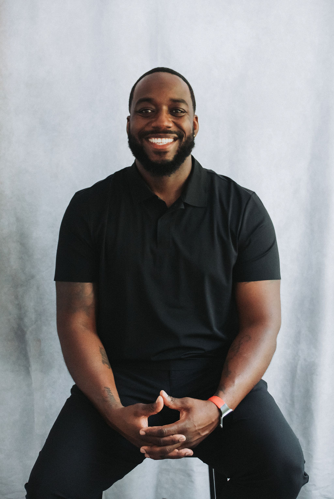

BTR BOARD OF DIRECTORS
Roberto Cadet
Clerk

Roberto Cadet is a dedicated and compassionate Physical Therapist Assistant with 6 years of experience helping individuals improve their mobility and quality of life. He believes in the power of collective action to bring meaningful change. Aspiring to become a leader in his community, Roberto is eager to engage in initiatives that create lasting impact on generations to come.
CONNECT WITH ROBERTO
rcadet@breakingthroughroadblocks.org